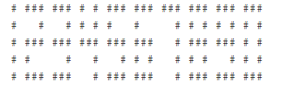
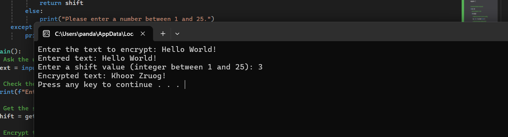
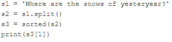

обробляти рядки за допомогою спеціальних функцій і методів Python;
сумісно обробляти рядки і списки.
Основні методи та функції для обробки рядків
Основні методи для обробки рядків
capitalize() – замінює всі мали букви на великі;
center() – центрує рядок всередині поля відомої довжини;
count() – рахує кількість входжень даного символу в рядку;
join() – з’єднує всі елементи кортежу/списку в один рядок;
lower() – перетворює всі літери рядка на малі;
lstrip() – видаляє білі символи з початку рядка;
replace() – замінює задану підрядок іншим;
rfind() – знаходить підрядок, пошук починається з кінця рядка;
rstrip() – видаляє білі символи з кінця рядка;
split() – розбиває рядок на підрядки з використанням заданого роздільника;
strip() – видаляє білі символи з початку і кінця рядка;
swapcase() – змінює регістр літер на протилежний (малі на великі і навпаки);
title() – робить першу літеру в кожному слові великою;
upper() – перетворює всі літери рядка на великі.
Аналіз вмісту рядків
Содержимое строки можна визначити за допомогою наступних методів (вони повертають логічні значення):
endswith() - закінчується рядок заданою підстрокою?
isalnum() - складається рядок лише з букв і цифр?
isalpha() - складається рядок лише з букв?
islower() - складається рядок лише з малих літер?
isspace() - складається рядок лише з пробільних символів?
isupper() - складається рядок лише з великих літер?
startswith() - починається рядок з даної підстроки?
Важливо!
Не всі методи можуть змінювати рядок “на місці”, декотрі створюють копію.
Приклад 1
Написати власну функцію, яка працює практично так само, як оригінальний метод split(), а саме:
вона повинна приймати рівно один аргумент - рядок;
вона повинна повертати список слів, які можна створити з даного рядка, розділивши його пробілами;
якщо рядок порожній, функція повинна повертати порожній список;
ім’я функції mysplit().
Використовуйте шаблон у редакторі. Добре протестуйте свій код.
def mysplit(string): list_split = [] word =""for char in string:if char ==" ":if word: # Додає слово в список, якщо воно непорожнє list_split.append(word) word =""# Очищує слово для накопичення наступногоelse: word += char # Додає символ до поточного словаif word: # Додає останнє слово в список, якщо воно є list_split.append(word)return list_split# Тестування функціїprint(mysplit("To be or not to be, that is the question"))print(mysplit("To be or not to be,that is the question"))print(mysplit(" "))print(mysplit(" abc "))print(mysplit(""))
Це пристрій (іноді електронний, іноді механічний), який призначений для відображення однієї десяткової цифри за допомогою підмножини з семи сегментів. Якщо ви все ще не знаєте, що це таке, зверніться до статті у Вікіпедії.
Ваше завдання - написати програму, яка здатна імітувати роботу пристрою з семисегментним дисплеєм, хоча краще все ж таки використовувати окремі світлодіоди замість сегментів.
Кожна цифра складається з 13 світлодіодів (деякі горять, деякі вимкнені) – ось як ми це уявляємо:

Цифри у семисегментному поданні
Примітка: цифра 8 показує всі світлодіоди, які включені.
Ваш код повинен відображати будь-яке невід’ємне ціле число, введене користувачем.
Порада
Використання списку з десятьма цифрами може бути дуже корисним.
# Шаблони для цифр від 0 до 9 на семисегментному дисплеїdigits = [ [" _ ", "| |", "|_|"], # 0 [" ", " |", " |"], # 1 [" _ ", " _|", "|_ "], # 2 [" _ ", " _|", " _|"], # 3 [" ", "|_|", " |"], # 4 [" _ ", "|_ ", " _|"], # 5 [" _ ", "|_ ", "|_|"], # 6 [" _ ", " |", " |"], # 7 [" _ ", "|_|", "|_|"], # 8 [" _ ", "|_|", " _|"] # 9]def display_number(number):# Перетворимо число на рядок для обробки кожної цифри окремо str_number =str(number)# Порожній список для кожного рядка семисегментного відображення rows = ["", "", ""]# Додаємо кожну цифру до рядківfor digit in str_number: d =int(digit) rows[0] += digits[d][0] +" " rows[1] += digits[d][1] +" " rows[2] += digits[d][2] +" "# Виведемо результатfor row in rows:print(row)# Тестування функціїuser_input =input("Введіть невід'ємне ціле число: ")display_number(user_input)
Введіть невід'ємне ціле число: 13
_
| _|
| _|
Пояснення роботи коду
Шаблони цифр: digits зберігає кожну цифру у вигляді списку з трьох рядків, які імітують світлодіоди.
Функція display_number: Перетворює введене число на рядок. Проходить по кожній цифрі та формує рядки для трьох рівнів дисплея.
Вивід: Виводить число на трьох рядках, де кожен сегмент створює вигляд семисегментного дисплея.
Цей шифр був (мабуть) винайдений і використаний Гаєм Юлієм Цезарем та його військами під час Галльських війн. Ідея досить проста - кожна буква повідомлення замінюється на найближчу наступну (A стає B, B стає C тощо). Єдиним виключенням є буква Z, яка стає A.
Напишіть програму для шифрування поввідомлення, використовуючи такі припущення:
вона приймає лише латинські літери (примітка: римляни не використовували пробіли, ні цифри);
всі літери повідомлення знаходяться у верхньому регістрі (примітка: римляни знали лише великі літери).
def caesar_cipher(text): encrypted_text =""for char in text:# Зміщуємо букви, не торкаючись пробілів або символів поза алфавітомif char =='Z': encrypted_text +='A'# Z стає Aelse: encrypted_text +=chr(ord(char) +1) # Зміщуємо літеру на 1 впередreturn encrypted_text# Тестування шифру Цезаряmessage =input("Введіть повідомлення для шифрування (латинські великі літери): ")print("Зашифроване повідомлення:", caesar_cipher(message))
Введіть повідомлення для шифрування (латинські великі літери): ILOVEYOU
Зашифроване повідомлення: JMPWFZPV
Приклад 4
Напишить програму для дешифрування повідомлення, зашифрованого шифром Цезара.
# Тут має бути Ваш код# Caesar cipher - decrypting a message.cipher =input('Enter your cryptogram: ')text =''for char in cipher:ifnot char.isalpha():continue char = char.upper() code =ord(char) -1if code <ord('A'): code =ord('Z') text +=chr(code)print(text)
Enter your cryptogram: JMPWFZPV
ILOVEYOU
Завдання 1
Ви вже знайомі з шифром Цезаря, і тому ми хочемо, щоб Ви покращили код, який ми нещодавно показували.
Вихідний шифр Цезаря зрушує кожен символ однією: a стає b, z стає a, тощо. Давайте зробимо його трохи складнішим і дозволимо зміщеному значенню вийти з діапазону 1-25 включно.
Крім того, нехай код зберігає регістр літер (малі літери залишаться малими), а всі неалфавітні символи повинні залишитися без змін.
Ваше завдання - написати програму, яка:
запитує у користувача рядок, який треба зашифрувати; запитує користувача значення зсуву (ціле число з діапазону 1-25 - примітка: Ви повинні змусити користувача ввести дійсне значення зсуву (не здавайтеся і не дозволяйте некоректним даним обдурити Вас); друкує закодований текст. Протестуйте свій код, використовуючи надані нами дані.
def caesar_cipher(text, shift):# Створюємо список для збереження зашифрованого тексту encrypted_text = []# Перебираємо кожен символ у введеному текстіfor char in text:# Перевіряємо, чи є символ літероюif char.isalpha():# Визначаємо базовий символ для коректної роботи з регістром base =ord('a') if char.islower() elseord('A')# Обчислюємо новий символ з урахуванням зсуву encrypted_char =chr(base + (ord(char) - base + shift) %26) encrypted_text.append(encrypted_char)else:# Якщо символ не є літерою, додаємо його без змін encrypted_text.append(char)# Перетворюємо список символів у рядок і повертаємо йогоreturn''.join(encrypted_text)def get_shift():# Запитуємо у користувача зсувwhileTrue:try: shift =int(input("Введіть зсув (ціле число від 1 до 25): "))if1<= shift <=25:return shiftelse:print("Будь ласка, введіть число в діапазоні від 1 до 25.")exceptValueError:print("Будь ласка, введіть ціле число.")def main():# Запитуємо рядок для шифрування text =input("Введіть текст для шифрування: ")# Перевірка введеного текстуprint(f"Введений текст: {text}")# Отримуємо зсув shift = get_shift()# Шифруємо текст і виводимо результат encrypted_text = caesar_cipher(text, shift)print(f"Зашифрований текст: {encrypted_text}")# Викликаємо головну функціюif__name__=="__main__": main()

Снимок экрана 2024-11-06 132138.png
Завдання для самостіної роботи
Виконати приклади 1-4 і завдання 1, наведені вище у цьому зошиті.
Створити файл lab_9_StudentLastName.py з написаним кодом.
Закомітити файл у локальний репозиторій.
Відправити (“запушити”) поточну версію Git-проєкта у віддалений репозиторій на GitHub.
Звіт має складатися з файлу (за основу взяти цей Python-зошит) lab_9_StudentLastName.ipynb. (Можливі якісь додакові файли)
Контрольні запитання
Який із наступних рядків описує справжню умову?
Який очікуваний результат наступного коду?

Який очікуваний результат наступного коду?
Відповіді на контрольні питання
У Python порівняння рядків здійснюється на основі лексикографічного порядку (схоже на алфавітний порядок, але враховує ASCII значення символів). Розглянемо кожен рядок:
print('smith' > 'Smith') # False:
Рядок 'smith' не більше за 'Smith', тому що у Python великі літери мають менші ASCII значення, ніж малі. 's' (ASCII 115) більше за 'S' (ASCII 83), тому це вірно.
Виведе True, а не False.
print('Smiths' < 'Smith') # False:
'Smiths' не менше за 'Smith', тому що в рядку 'Smiths' є додатковий символ 's', який вважається більшим, ніж кінець рядка 'Smith'.
Виведе False, що є правильним.
print('Smith' > '1000') # True:
Порівняння рядків у Python базується на лексикографічному порядку. У цьому випадку рядок 'Smith' (починається з 'S') буде більшим за '1000', тому що символ 'S' має більший ASCII код (83) порівняно з цифрою '1' (ASCII 49).
Виведе True, що є правильним.
print('11' < '8') # False:
Лексикографічно рядок '11' менший за рядок '8', оскільки перший символ '1' має менший ASCII код (49) порівняно з '8' (ASCII 56).
Виведе True, а не False.
Таким чином, правильні висновки: - Перше порівняння має бути True, а не False. - Друге порівняння правильне. - Третє порівняння правильне. - Четверте порівняння має вивести True, а не False.
Таким чином, жоден з рядків не є повністю к оректним за коментарями.
Розберемо код по кроках:
s1 = 'Where are the snows of yesteryear?':
Ось рядок s1, який містить текст: 'Where are the snows of yesteryear?'.
s2 = s1.split():
Метод split() розділяє рядок s1 за пробілами (за умовчанням) і повертає список слів. Результат буде такий:
Метод sorted() сортує список за лексикографічним порядком. Для цього кожне слово в списку буде порівнюватися на основі його першої літери. Порівняння буде здійснюватися без урахування регістру літер, оскільки Python сортує рядки так, що великі літери йдуть перед малими.
Лексикографічно перше слово буде 'Where', друге — 'are', і так далі.
print(s3[1]):
Ми виводимо другий елемент списку s3 (враховуючи, що індексація починається з 0). Тому s3[1] буде 'are'.
Очікуваний результат:
are
Розглянемо, що відбувається в коді:
s1 = '12.8':
Ось рядок s1, який містить значення '12.8'.
i = int(s1):
Метод int() намагається перетворити рядок на ціле число. Однак, рядок '12.8' містить десяткову частину, і спроба перетворити його в ціле число викличе помилку (ValueError), оскільки int() не може коректно обробляти числа з плаваючою точкою.
В результаті виконання цього рядка код зупиниться і викличе помилку:
ValueError: invalid literal for int() with base 10: '12.8'
Висновок:
Очікуваний результат — помилка типу ValueError. Щоб уникнути цієї помилки, перед використанням int() потрібно переконатися, що рядок містить лише ціле число (без десяткової частини).